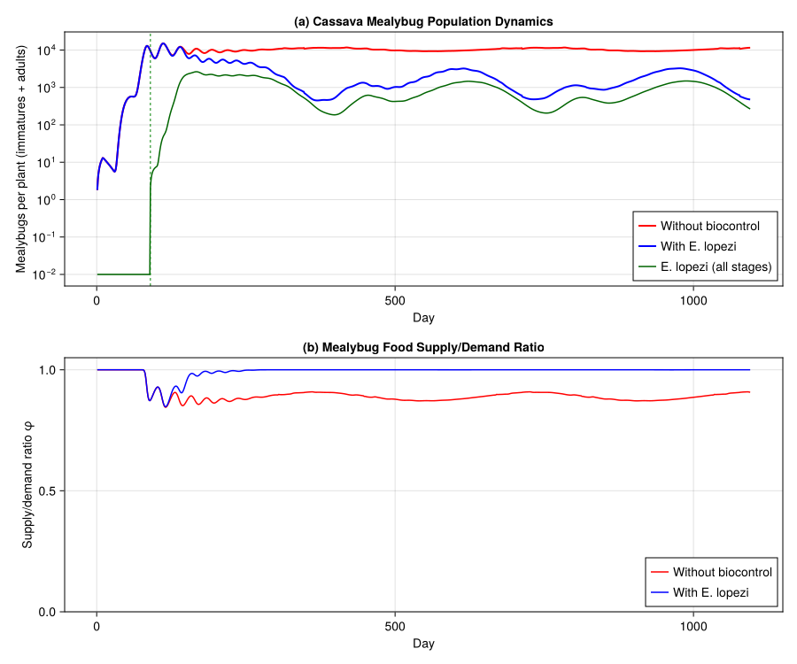
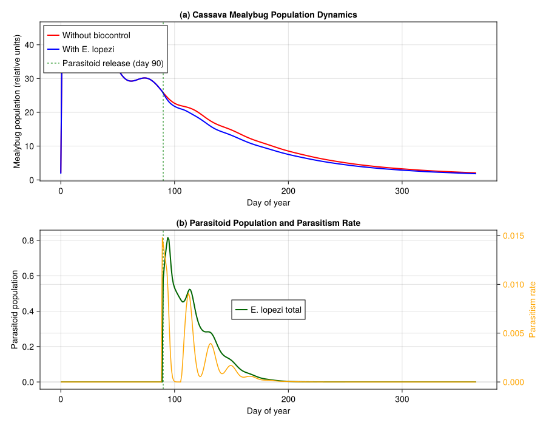
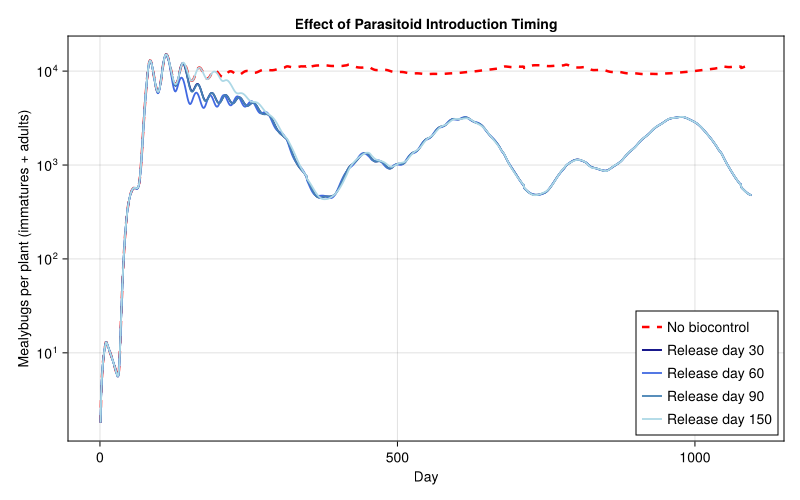

Cassava Mealybug Biocontrol in Africa
- Background
- Setup
- 1. Cassava Plant Model
- 2. Cassava Mealybug (Phenacoccus manihoti)
- 3. Parasitoid (Epidinocarsis lopezi)
- 4. Trophic Interactions
- 5. Weather: West African Savanna
- 6. The Coupled Model
- 7. Simulation: Mealybug Without Biocontrol
- 8. Simulation: With Parasitoid Biocontrol
- 9. Visualization
- 10. Temperature Sensitivity Analysis
- 11. Timing of Parasitoid Introduction
- Key Insights
- Simplifications
- References
- Parameter Sources
Primary reference: (Gutierrez et al. 1988).
Background
The cassava mealybug Phenacoccus manihoti Matile-Ferrero was accidentally introduced from South America to Africa in the early 1970s, where it rapidly became the most devastating pest of cassava (Manihot esculenta) — the primary staple food crop for over 200 million people across sub-Saharan Africa. Without natural enemies in its new range, mealybug populations exploded during dry seasons, causing severe shoot tip bunching, leaf curling, defoliation, and tuber yield losses estimated at 50–80% in heavily infested fields.
In what became one of the most successful classical biological control programs in history, the International Institute of Tropical Agriculture (IITA) imported the solitary encyrtid parasitoid Epidinocarsis lopezi (De Santis) from South America and first released it in Nigeria in 1981. By 1988, E. lopezi had established in 19 African countries, spreading over 1.5 million km², and was credited with reducing mealybug populations to economically insignificant levels across the cassava belt. Neuenschwander et al. (1989) estimated yield gains of 2.5 t/ha in the savanna zone — translating to hundreds of millions of dollars annually in averted losses.
Gutierrez et al. (1988a,b) developed physiologically based demographic models of the cassava–mealybug–parasitoid tritrophic system, demonstrating that E. lopezi alone was capable of preventing tuber yield losses, while native coccinellid predators had comparatively small impact. The PBDM framework captured the critical role of temperature in mediating the interaction: both mealybug and parasitoid develop through physiological (degree-day) time, and the parasitoid’s slightly faster development rate at moderate temperatures gives it a competitive advantage that underpins successful biological control.
This vignette builds a tritrophic PBDM of the cassava–mealybug–parasitoid system using PhysiologicallyBasedDemographicModels.jl, with parameters drawn from Gutierrez et al. (1988a,b) and Neuenschwander et al. (1989).
The model follows the supply/demand structure of Gutierrez et al. (1988b): the mealybug feeds on the plant’s photosynthate through a Frazer–Gilbert functional response, and the ratio of supply to demand, φ, scales its fecundity and survival. The plant loses whatever the mealybug takes. E. lopezi attacks the mealybug through the parasitoid form of the same functional response. Insect parameters come from the Appendix of Gutierrez et al. (1988b, p. 940). The cassava plant is much simpler than the carbon, nitrogen and water model of Gutierrez et al. (1988a). Its parts that are not from the papers are listed in the parameter table at the end.
Setup
using PhysiologicallyBasedDemographicModels
using Statistics
using CairoMakie1. Cassava Plant Model
Cassava development is driven by thermal accumulation above a base temperature of 10 °C. The canopy is a distributed delay of leaf dry mass (g per plant) whose leaves age out after about 2500 degree-days. Each day the canopy intercepts light and produces photosynthate. The light model is the one in the CASAS cassava code (Gutierrez & Ponti, bio.pas): interception $1 - e^{-0.8047\,\mathrm{LAI}}$ enters a Frazer–Gilbert response whose demand is the plant’s maximum daily growth demand $b_p$, and solar radiation (cal cm⁻² d⁻¹) is converted to carbohydrate as radiation/3.875 (Loomis & Williams 1963). Leaf area per gram (1.80 dm² g⁻¹) and the planting density (one plant per m²) are taken from the same code. Photosynthate left after the mealybug has fed first replaces the leaves that aged out, holding the canopy at its initial size. The rest is stored in the tubers. The maximum demand $b_p$ has no published value here. It is set to 10 g CH₂O per plant per day, which gives roughly 3 kg of dry matter per plant per year, about 30 t ha⁻¹ at one plant per m².
# Cassava development parameters (Gutierrez et al. 1988a)
const CASSAVA_T_BASE = 10.0 # °C
const CASSAVA_T_UPPER = 38.0 # °C
cassava_dev = LinearDevelopmentRate(CASSAVA_T_BASE, CASSAVA_T_UPPER)
# Light interception and photosynthesis (CASAS cassava code, bio.pas / init.pas)
const LEAF_AREA_PER_G = 1.80 # dm² leaf per g leaf (variety TMS30572)
const PLANT_AREA_DM2 = 100.0 # dm² ground per plant (1 m × 1 m spacing)
const B_PLANT = 10.0 # g CH₂O plant⁻¹ day⁻¹, maximum plant demand [assumed]
leaf_area_index(leaf_g) = leaf_g * LEAF_AREA_PER_G / PLANT_AREA_DM2
"""Daily photosynthate supply (g CH₂O per plant) from leaf mass and radiation (MJ m⁻² d⁻¹)."""
function photosynthate(leaf_g, radiation_MJ)
α = 1 - exp(-0.8047 * leaf_area_index(leaf_g))
α <= 0 && return 0.0
light = radiation_MJ * 23.9 / 3.875 * PLANT_AREA_DM2 / 100 # g CH₂O equivalent
return acquire(FraserGilbertResponse(α), light, B_PLANT)
end
# Canopy: 125 g of leaf per plant in 25 age classes (LAI ≈ 2.3)
make_cassava() = Population(:cassava,
[LifeStage(:canopy, DistributedDelay(25, 2500.0; W0=5.0), cassava_dev, 0.0002)])
cassava = make_cassava()
println("Initial leaf mass: $(total_population(cassava)) g/plant, " *
"LAI = $(round(leaf_area_index(total_population(cassava)), digits=2))")
for rad in (14.0, 18.0, 22.0)
println(" radiation $rad MJ/m² → supply $(round(photosynthate(125.0, rad), digits=1)) g CH₂O/plant/day")
endInitial leaf mass: 125.0 g/plant, LAI = 2.25
radiation 14.0 MJ/m² → supply 10.0 g CH₂O/plant/day
radiation 18.0 MJ/m² → supply 10.0 g CH₂O/plant/day
radiation 22.0 MJ/m² → supply 10.0 g CH₂O/plant/day2. Cassava Mealybug (Phenacoccus manihoti)
P. manihoti is parthenogenetic, so every individual is female. The life cycle follows the Appendix of Gutierrez et al. (1988b): embryos develop inside the mother for 65 DD, eggs take 114 DD, immatures 192 DD, and adults live 371 DD, all above 13.5 °C.
Demand. The population’s demand rate $b$ (eqn 5) is the sum of immature growth, embryo growth, reserves (10 % of growth) and respiration, divided by $1-\beta$ for egestion ($\beta = 0.176$). Immature growth demand at age $a$ DD is $0.0249\,e^{-4.6 + 0.0249a}$ mg DD⁻¹, embryo growth demand is 0.000154 mg DD⁻¹, and respiration is $0.135\,e^{0.007\Delta t}$ × active weight per day (Appendix).
Fecundity. The maximum rate of embryo production by an adult of age $x$ DD (since adult emergence) is $0.47x/1.0072^x$ (Appendix). Read as embryos per female per day, this gives about 500 embryos over an adult life at 27 °C when food is unlimited. Births are this maximum scaled by φ (eqn 2).
# P. manihoti (Gutierrez et al. 1988b, Appendix p. 940)
const CM_T_BASE = 13.5 # °C
const CM_T_UPPER = 35.0 # °C (Le Rü & Fabres 1987)
cm_dev = LinearDevelopmentRate(CM_T_BASE, CM_T_UPPER)
const CM_SEARCH = 0.25 # Frazer–Gilbert search rate on photosynthate
const CM_EGESTED = 0.176 # proportion egested, β
const CM_RESERVES = 0.10 # reserves, fraction of growth demand
const CM_EMBRYO_DEMAND = 0.000154 # mg per embryo per DD
cm_growth_demand(a) = 0.0249 * exp(-4.6 + 0.0249a) # mg per immature per DD at age a
cm_mass(a) = exp(-4.6) * (exp(0.0249a) - 1) # mg, integral of growth demand
const CM_ADULT_MASS = cm_mass(192.0)
cm_fecundity(x) = x <= 0 ? 0.0 : 0.47x / 1.0072^x # embryos/female/day at age x DD
make_mealybug() = Population(:mealybug, [
LifeStage(:embryo, DistributedDelay(10, 65.0; W0=0.0), cm_dev, 0.005),
LifeStage(:egg, DistributedDelay(10, 114.0; W0=2.0), cm_dev, 0.003), # 20 eggs (1 ovisac) per plant
LifeStage(:immature, DistributedDelay(20, 192.0; W0=0.0), cm_dev, 0.004),
LifeStage(:adult, DistributedDelay(15, 371.0; W0=0.0), cm_dev, 0.005),
])
"""Mealybug demand rate b (g per plant per day), eqn 5, given today's degree-days."""
function mealybug_demand(mb, dd)
emb, imm, ad = mb.stages[1].delay, mb.stages[3].delay, mb.stages[4].delay
age(d, j) = (j - 0.5) * d.τ / d.k
growth = sum(imm.W[j] * cm_growth_demand(age(imm, j)) for j in 1:imm.k) * dd
embryo = delay_total(emb) * CM_EMBRYO_DEMAND * dd
active = sum(imm.W[j] * cm_mass(age(imm, j)) for j in 1:imm.k) +
delay_total(ad) * CM_ADULT_MASS +
sum(emb.W[j] * CM_EMBRYO_DEMAND * age(emb, j) for j in 1:emb.k)
respiration = 0.135 * exp(0.007dd) * active
return ((1 + CM_RESERVES) * (growth + embryo) + respiration) / (1 - CM_EGESTED) / 1000
end
"""Embryos initiated today at full nutrition."""
function mealybug_max_births(mb)
ad = mb.stages[4].delay
return sum(ad.W[j] * cm_fecundity((j - 0.5) * ad.τ / ad.k) for j in 1:ad.k)
end
let dd = 27.0 - CM_T_BASE
days = 371 / dd
eggs = sum(cm_fecundity(x) for x in range(0, 371; length=1000)) * 371 / 1000 / dd
println("Adult life at 27 °C ≈ $(round(days, digits=1)) days; " *
"maximum embryos per female ≈ $(round(eggs))")
endAdult life at 27 °C ≈ 27.5 days; maximum embryos per female ≈ 503.03. Parasitoid (Epidinocarsis lopezi)
E. lopezi is a solitary endoparasitoid of P. manihoti. From the Appendix of Gutierrez et al. (1988b): the threshold is 13.3 °C, eggs and larvae take 100 DD, pupae 86 DD, and adults live 280 DD. Hyperparasitoids are found at 0.28 times the density of E. lopezi immatures (p. 926). Here that is read as 28 % of immatures lost over the 186 DD of immature development.
# E. lopezi (Gutierrez et al. 1988b, Appendix p. 940)
const EL_T_BASE = 13.3 # °C
const EL_T_UPPER = 34.0 # °C [assumed]
el_dev = LinearDevelopmentRate(EL_T_BASE, EL_T_UPPER)
const EL_OVIPOSITION = 0.9 # eggs per female per DD (maximum demand)
const EL_HOST_FEEDING = 0.3 # proportion of attacked hosts used for host feeding
const EL_GAMMA = 0.05 # aggregate search S_E = 1 - exp(-γ FEM)
const EL_PREF_IMMATURE = 0.3 # host preferences
const EL_PREF_ADULT = 0.65
const EL_MU_HYPER = -log(1 - 0.28) / (100 + 86) # per DD, hyperparasitism on immatures
el_oviposition_temperature(dd) = max(0.0, 1 - ((dd - 10) / 10)^2) # Appendix
make_parasitoid() = Population(:parasitoid, [
LifeStage(:egg_larva, DistributedDelay(15, 100.0; W0=0.0), el_dev, EL_MU_HYPER),
LifeStage(:pupa, DistributedDelay(10, 86.0; W0=0.0), el_dev, EL_MU_HYPER),
LifeStage(:adult, DistributedDelay(10, 280.0; W0=0.0), el_dev, 0.006),
])
println("E. lopezi: egg–larva 100 DD, pupa 86 DD, adult 280 DD above $(EL_T_BASE) °C")
for T in (20.0, 23.3, 27.0, 30.0)
dd = T - EL_T_BASE
println(" T = $T °C: oviposition scalar $(round(el_oviposition_temperature(dd), digits=2)), " *
"max eggs/female/day $(round(EL_OVIPOSITION * dd * el_oviposition_temperature(dd), digits=1))")
endE. lopezi: egg–larva 100 DD, pupa 86 DD, adult 280 DD above 13.3 °C
T = 20.0 °C: oviposition scalar 0.89, max eggs/female/day 5.4
T = 23.3 °C: oviposition scalar 1.0, max eggs/female/day 9.0
T = 27.0 °C: oviposition scalar 0.86, max eggs/female/day 10.6
T = 30.0 °C: oviposition scalar 0.55, max eggs/female/day 8.34. Trophic Interactions
Mealybug feeding (eqns 2–4). The mealybug population, with demand $b$, searches today’s photosynthate $P$ with search rate $s = 0.25$. It acquires $A = b\,(1 - e^{-sP/b})$ and φ = $A/b$. The plant loses $A$. φ scales embryo production (eqn 2) and survival (eqn 6, $l_{x\phi}$ = φ per day). The CASAS code applies φ to every mealybug stage and to the parasitoid immatures inside them, and so does this vignette.
Parasitism (eqns 7–13). Hosts are weighted by preference, $H_w = 0.3\,N_\mathrm{imm} + 0.65\,N_\mathrm{adult}$. The females’ demand for hosts is $b_E = 0.9\,\Delta t\,\phi_T\,\mathrm{FEM}/(1 - 0.3)$: oviposition, plus host feeding, which takes 0.3 of the hosts attacked. The females’ search is $S_E = 1 - e^{-0.05\,\mathrm{FEM}}$. In the parasitoid form of the Frazer–Gilbert model, $E = b_E(1 - e^{-S_E H_w/b_E})$ attacks are spread at random over the hosts, so $N_a = H_w(1 - e^{-E/H_w})$ distinct hosts are attacked. Each stage loses $\xi_i N_a / H_w$ of its members (eqns 9–12). Of the hosts attacked, 0.7 are parasitized, and the female fraction of the progeny is $\mathrm{SR} = H_w/H_T$, bounded to [0.3, 0.75] (eqn 13). The ratio of hosts attacked to demand, $N_a/b_E$, sets the daily survival (and emigration) of the adult parasitoids (p. 926).
cm_feeding = FraserGilbertResponse(CM_SEARCH)
"""Hosts attacked by FEM female E. lopezi on weighted host density Hw, with demand bE."""
function parasitoid_attacks(Hw, FEM, bE)
(Hw <= 0 || FEM <= 0 || bE <= 0) && return 0.0
SE = 1 - exp(-EL_GAMMA * FEM)
eggs = bE * (1 - exp(-SE * Hw / bE))
return Hw * (1 - exp(-eggs / Hw))
end
println("--- Mealybug supply/demand (P = 9.8 g CH₂O/plant/day) ---")
for n in (1_000, 2_000, 5_000, 10_000, 20_000)
b = n * 0.4e-3 # ≈ 0.4 mg per mealybug per day
println(" ≈$(lpad(n, 6)) mealybugs: demand $(round(b, digits=1)) g/day, " *
"φ = $(round(supply_demand_ratio(cm_feeding, 9.8, b), digits=3))")
end
println("\n--- E. lopezi attacks per day at 27 °C ---")
let dd = 27.0 - EL_T_BASE
for FEM in (1.0, 10.0, 100.0), Hw in (100.0, 1000.0, 10000.0)
bE = EL_OVIPOSITION * dd * el_oviposition_temperature(dd) * FEM / (1 - EL_HOST_FEEDING)
Na = parasitoid_attacks(Hw, FEM, bE)
println(" FEM = $(lpad(FEM, 5)), Hw = $(lpad(Hw, 7)): hosts attacked $(round(Na, sigdigits=3)), " *
"attacked/demand $(round(Na / bE, digits=2))")
end
end--- Mealybug supply/demand (P = 9.8 g CH₂O/plant/day) ---
≈ 1000 mealybugs: demand 0.4 g/day, φ = 0.998
≈ 2000 mealybugs: demand 0.8 g/day, φ = 0.953
≈ 5000 mealybugs: demand 2.0 g/day, φ = 0.706
≈ 10000 mealybugs: demand 4.0 g/day, φ = 0.458
≈ 20000 mealybugs: demand 8.0 g/day, φ = 0.264
--- E. lopezi attacks per day at 27 °C ---
FEM = 1.0, Hw = 100.0: hosts attacked 4.09, attacked/demand 0.27
FEM = 1.0, Hw = 1000.0: hosts attacked 14.5, attacked/demand 0.95
FEM = 1.0, Hw = 10000.0: hosts attacked 15.2, attacked/demand 1.0
FEM = 10.0, Hw = 100.0: hosts attacked 29.3, attacked/demand 0.19
FEM = 10.0, Hw = 1000.0: hosts attacked 131.0, attacked/demand 0.86
FEM = 10.0, Hw = 10000.0: hosts attacked 151.0, attacked/demand 0.99
FEM = 100.0, Hw = 100.0: hosts attacked 61.8, attacked/demand 0.04
FEM = 100.0, Hw = 1000.0: hosts attacked 518.0, attacked/demand 0.34
FEM = 100.0, Hw = 10000.0: hosts attacked 1410.0, attacked/demand 0.935. Weather: West African Savanna
We simulate three years of weather representative of the Nigerian/Ghanaian savanna zone where the mealybug problem was most severe: a warm tropical climate with a distinct dry season. Mean annual temperature is about 27 °C, with moderate seasonal variation. The weather has no rainfall, so the rain-induced mortality of Gutierrez et al. (1988b, eqn 16) does not arise.
const N_YEARS = 3
n_days = 365 * N_YEARS
savanna_T(d) = 27.0 + 3.0 * sin(2π * (d - 100) / 365)
savanna_rad(d) = 18.0 + 4.0 * sin(2π * (d - 60) / 365) # MJ m⁻² d⁻¹, higher in the dry season
function savanna_weather(; offset=0.0, n=n_days)
WeatherSeries([DailyWeather(savanna_T(d) + offset, savanna_T(d) + offset - 5.0,
savanna_T(d) + offset + 5.0;
radiation=savanna_rad(d), photoperiod=12.2) for d in 1:n];
day_offset=1)
end
weather = savanna_weather()
println("\n--- West African Savanna Weather ---")
for (label, d) in [("Jan (dry)", 15), ("Apr (onset)", 100),
("Jul (wet)", 195), ("Oct (late)", 285)]
w = get_weather(weather, d)
println(" $label: T=$(round(w.T_mean, digits=1))°C, " *
"Rad=$(round(w.radiation, digits=1)) MJ/m²")
end--- West African Savanna Weather ---
Jan (dry): T=24.0°C, Rad=15.2 MJ/m²
Apr (onset): T=27.0°C, Rad=20.5 MJ/m²
Jul (wet): T=30.0°C, Rad=20.9 MJ/m²
Oct (late): T=26.9°C, Rad=15.3 MJ/m²6. The Coupled Model
The cassava canopy, tuber store, mealybug and parasitoid are components of a PopulationSystem. One CustomRule carries out each day’s trophic interactions after the populations have aged. It computes the plant’s photosynthate, the mealybug’s demand, acquisition and φ, plant growth, births, food-related survival, and parasitism.
"""
Build and solve the cassava–mealybug–E. lopezi system. Returns stage totals,
tuber mass and the daily log of the trophic rule.
"""
function simulate_tritrophic(weather, n_days;
introduce_parasitoid=true,
introduction_day=90,
initial_parasitoids=0.5) # adult females per plant (Appendix)
sys = PopulationSystem(
:cassava => PopulationComponent(make_cassava(); species=:cassava),
:tuber => PopulationComponent(BulkPopulation(:tuber, 0.0); species=:cassava),
:mealybug => PopulationComponent(make_mealybug(); species=:mealybug),
:parasitoid => PopulationComponent(make_parasitoid(); species=:parasitoid),
)
trophic = CustomRule(:trophic, (sys, w, day, p) -> begin
cas = sys[:cassava].population
mb = sys[:mealybug].population
el = sys[:parasitoid].population
# Plant supply and mealybug acquisition (eqns 2–5)
leaf = total_population(cas)
P = photosynthate(leaf, w.radiation)
b = mealybug_demand(mb, degree_days(cm_dev, w.T_mean))
A = b > 0 ? acquire(cm_feeding, P, b) : 0.0
φ = b > 0 ? A / b : 1.0
# Plant growth: replace leaves that aged out or died, store the rest
canopy = cas.stages[1].delay
dd_cas = degree_days(cassava_dev, w.T_mean)
replace = canopy.W[end] * canopy.k / canopy.τ * dd_cas + cas.stages[1].μ * dd_cas * leaf
surplus = max(P - A, 0.0)
new_leaf = min(surplus, replace)
inject!(sys, :cassava, 1, new_leaf)
sys[:tuber].population.value[] += surplus - new_leaf
# Births scaled by φ, then food-related survival φ (eqn 6)
births = φ * mealybug_max_births(mb)
if φ < 1
remove_fraction!(sys, :mealybug, 1 - φ)
remove_fraction!(sys, :parasitoid, 1, 1 - φ) # parasitoids inside starving hosts
end
inject!(sys, :mealybug, 1, births)
# Parasitism by E. lopezi (eqns 7–13)
attacked = 0.0
parasitism_rate = 0.0
if introduce_parasitoid && day >= introduction_day
FEM = delay_total(el.stages[3].delay)
dd_el = degree_days(el_dev, w.T_mean)
bE = EL_OVIPOSITION * dd_el * el_oviposition_temperature(dd_el) * FEM /
(1 - EL_HOST_FEEDING)
n_imm = delay_total(mb.stages[3].delay)
n_ad = delay_total(mb.stages[4].delay)
Hw = EL_PREF_IMMATURE * n_imm + EL_PREF_ADULT * n_ad
if bE > 0
attacked = parasitoid_attacks(Hw, FEM, bE)
if attacked > 0
f = attacked / Hw
remove_fraction!(sys, :mealybug, 3, clamp(EL_PREF_IMMATURE * f, 0.0, 1.0))
remove_fraction!(sys, :mealybug, 4, clamp(EL_PREF_ADULT * f, 0.0, 1.0))
sex_ratio = clamp(Hw / (n_imm + n_ad), 0.3, 0.75)
inject!(sys, :parasitoid, 1, sex_ratio * (1 - EL_HOST_FEEDING) * attacked)
parasitism_rate = attacked / (n_imm + n_ad)
end
# Food-related survival and emigration of adults: hosts attacked / demand
φE = min(1.0, attacked / bE)
φE < 1 && remove_fraction!(sys, :parasitoid, 3, 1 - φE)
end
end
return (supply=P, demand=b, acquired=A, φ=φ, births=births,
attacked=attacked, parasitism_rate=parasitism_rate)
end)
events = AbstractScheduledEvent[]
if introduce_parasitoid
push!(events, SingleDayRelease(:parasitoid, initial_parasitoids, introduction_day;
stage_idx=3))
end
prob = PBDMProblem(MultiSpeciesPBDMNew(), sys, weather, (1, n_days);
rules=AbstractInteractionRule[trophic], events=events)
sol = solve(prob, DirectIteration())
cm_stages = permutedims(sol.component_stage_totals[:mealybug]) # day × stage
el_stages = permutedims(sol.component_stage_totals[:parasitoid])
log = sol.rule_log[:trophic]
return (; cm_stages, el_stages,
cm_active = cm_stages[:, 3] .+ cm_stages[:, 4], # immatures + adults
el_total = vec(sum(el_stages, dims=2)),
tuber = sol.component_totals[:tuber],
leaf = sol.component_totals[:cassava],
φ = [l.φ for l in log],
parasitism_rate = [l.parasitism_rate for l in log],
sol)
endMain.Notebook.simulate_tritrophic7. Simulation: Mealybug Without Biocontrol
First, we simulate the mealybug on cassava without E. lopezi. This was the situation across Africa from the 1970s until the parasitoid established. The infestation starts from one ovisac (20 eggs) per plant.
res_nobc = simulate_tritrophic(weather, n_days; introduce_parasitoid=false)
yr(y) = (365 * (y - 1) + 1):(365 * y)
println("--- Mealybug WITHOUT Biocontrol ---")
println("Peak immatures + adults: $(round(maximum(res_nobc.cm_active), sigdigits=3)) per plant " *
"(day $(argmax(res_nobc.cm_active)))")
for y in 1:N_YEARS
println(" Year $y: mean $(round(mean(res_nobc.cm_active[yr(y)]), sigdigits=3)) per plant, " *
"mean φ = $(round(mean(res_nobc.φ[yr(y)]), digits=3))")
end--- Mealybug WITHOUT Biocontrol ---
Peak immatures + adults: 15000.0 per plant (day 111)
Year 1: mean 8060.0 per plant, mean φ = 0.912
Year 2: mean 10400.0 per plant, mean φ = 0.889
Year 3: mean 10400.0 per plant, mean φ = 0.8898. Simulation: With Parasitoid Biocontrol
Half an adult female E. lopezi per plant (the Appendix’s initial value) is released on day 90.
res_bc = simulate_tritrophic(weather, n_days; introduce_parasitoid=true,
introduction_day=90, initial_parasitoids=0.5)
println("--- Tritrophic Simulation Results (immatures + adults per plant) ---")
println("Year | No biocontrol | With E. lopezi | Ratio | E. lopezi after release (mean, min)")
for y in 1:N_YEARS
a, b = mean(res_nobc.cm_active[yr(y)]), mean(res_bc.cm_active[yr(y)])
released = intersect(yr(y), 90:n_days)
println(" $y | $(lpad(round(a, sigdigits=3), 13)) | $(lpad(round(b, sigdigits=3), 14)) | " *
"$(lpad(round(b / a, digits=3), 5)) | $(round(mean(res_bc.el_total[released]), sigdigits=3)), " *
"$(round(minimum(res_bc.el_total[released]), sigdigits=3))")
end
println("Mean parasitism rate (years 2–3): " *
"$(round(100 * mean(res_bc.parasitism_rate[366:end]), digits=1))% per day")
println("Tuber dry matter after $N_YEARS years: $(round(res_nobc.tuber[end] / 1000, digits=1)) kg/plant " *
"without, $(round(res_bc.tuber[end] / 1000, digits=1)) kg/plant with E. lopezi")--- Tritrophic Simulation Results (immatures + adults per plant) ---
Year | No biocontrol | With E. lopezi | Ratio | E. lopezi after release (mean, min)
1 | 8060.0 | 4250.0 | 0.527 | 1450.0, 2.08
2 | 10400.0 | 1510.0 | 0.145 | 700.0, 185.0
3 | 10400.0 | 1530.0 | 0.147 | 710.0, 206.0
Mean parasitism rate (years 2–3): 14.8% per day
Tuber dry matter after 3 years: 8.7 kg/plant without, 9.5 kg/plant with E. lopezi9. Visualization
Mealybug dynamics: with vs without biocontrol
days = 1:n_days
fig = Figure(size=(900, 750))
ax1 = Axis(fig[1, 1], yscale=log10,
xlabel="Day", ylabel="Mealybugs per plant (immatures + adults)",
title="(a) Cassava Mealybug Population Dynamics")
lines!(ax1, days, max.(res_nobc.cm_active, 1e-2), color=:red, linewidth=2,
label="Without biocontrol")
lines!(ax1, days, max.(res_bc.cm_active, 1e-2), color=:blue, linewidth=2,
label="With E. lopezi")
lines!(ax1, days, max.(res_bc.el_total, 1e-2), color=:darkgreen, linewidth=1.5,
label="E. lopezi (all stages)")
vlines!(ax1, [90], color=:green, linestyle=:dash, linewidth=1)
axislegend(ax1, position=:rb)
ax2 = Axis(fig[2, 1], xlabel="Day", ylabel="Supply/demand ratio φ",
title="(b) Mealybug Food Supply/Demand Ratio")
lines!(ax2, days, res_nobc.φ, color=:red, linewidth=1.5, label="Without biocontrol")
lines!(ax2, days, res_bc.φ, color=:blue, linewidth=1.5, label="With E. lopezi")
ylims!(ax2, 0, 1.05)
axislegend(ax2, position=:rb)
fig
Stage-structured dynamics
fig2 = Figure(size=(900, 700))
ax3 = Axis(fig2[1, 1], xlabel="Day", ylabel="Per plant",
title="(a) Mealybug Stage Structure (with biocontrol)")
for (j, (name, col)) in enumerate([("Embryos", :khaki), ("Eggs", :gold),
("Immatures", :orange), ("Adults", :red)])
lines!(ax3, days, res_bc.cm_stages[:, j], color=col, linewidth=2, label=name)
end
vlines!(ax3, [90], color=:green, linestyle=:dash, linewidth=1)
axislegend(ax3, position=:rt)
ax4 = Axis(fig2[2, 1], xlabel="Day", ylabel="Per plant",
title="(b) Parasitoid Stage Structure")
lines!(ax4, days, res_bc.el_stages[:, 1], color=:lightgreen, linewidth=2,
label="Egg + Larva (in host)")
lines!(ax4, days, res_bc.el_stages[:, 2], color=:forestgreen, linewidth=2,
label="Pupa (mummy)")
lines!(ax4, days, res_bc.el_stages[:, 3], color=:darkgreen, linewidth=2,
label="Adult female")
vlines!(ax4, [90], color=:green, linestyle=:dash, linewidth=1)
axislegend(ax4, position=:rt)
fig2
10. Temperature Sensitivity Analysis
The parasitoid’s effectiveness depends on how temperature acts on it and on its host. We compare three temperature regimes over years 2–3.
println("--- Temperature Sensitivity (mean immatures + adults per plant, years 2–3) ---")
println("Scenario | No biocontrol | With E. lopezi | Ratio")
println("-" ^ 66)
later = 366:n_days
for (label, offset) in [("Cool highlands (-4°C)", -4.0),
("Standard savanna", 0.0),
("Hot lowlands (+3°C)", +3.0)]
w = savanna_weather(; offset)
r_no = simulate_tritrophic(w, n_days; introduce_parasitoid=false)
r_bc = simulate_tritrophic(w, n_days; introduce_parasitoid=true,
introduction_day=90, initial_parasitoids=0.5)
a, b = mean(r_no.cm_active[later]), mean(r_bc.cm_active[later])
println(" $(rpad(label, 22)) | $(lpad(round(a, sigdigits=3), 13)) | " *
"$(lpad(round(b, sigdigits=3), 14)) | $(round(b / a, digits=3))")
end--- Temperature Sensitivity (mean immatures + adults per plant, years 2–3) ---
Scenario | No biocontrol | With E. lopezi | Ratio
------------------------------------------------------------------
Cool highlands (-4°C) | 12300.0 | 788.0 | 0.064
Standard savanna | 10400.0 | 1520.0 | 0.146
Hot lowlands (+3°C) | 9300.0 | 4320.0 | 0.46511. Timing of Parasitoid Introduction
We release the same 0.5 females per plant on different days. Releases before the outbreak (days 30 and 60) find few hosts. The parasitoids that persist then build up with the mealybug, and after the first year the outcome hardly depends on the release day.
fig3 = Figure(size=(800, 500))
ax5 = Axis(fig3[1, 1], yscale=log10,
xlabel="Day", ylabel="Mealybugs per plant (immatures + adults)",
title="Effect of Parasitoid Introduction Timing")
lines!(ax5, days, max.(res_nobc.cm_active, 1e-2), color=:red, linewidth=2.5,
linestyle=:dash, label="No biocontrol")
colors = [:navy, :royalblue, :steelblue, :lightblue]
for (i, intro_day) in enumerate([30, 60, 90, 150])
r = simulate_tritrophic(weather, n_days; introduce_parasitoid=true,
introduction_day=intro_day, initial_parasitoids=0.5)
lines!(ax5, days, max.(r.cm_active, 1e-2), color=colors[i], linewidth=1.8,
label="Release day $intro_day")
end
axislegend(ax5, position=:rb)
fig3
Key Insights
Food limits the mealybug. Without natural enemies, the mealybug grows from one ovisac per plant until its demand outstrips what it can take from the plant’s photosynthate. φ then falls below 1, and fecundity and survival fall with it. Gutierrez et al. (1988b, p. 930) report a food-limited maximum of about 55 000 mealybugs per plant when rain-induced mortality is excluded, and about 10 000 per plant in the 1983–84 rainy-season runs.
Classical biocontrol. Gutierrez et al. (1988b, p. 929) found that 0.5 E. lopezi females per plant suppressed the simulated mealybug to about 0.1 of its density without parasitism. Here the parasitoid persists through years 2–3 and holds the mealybug at a small fraction of its food-limited level. Its own numbers are regulated by the ratio of hosts attacked to demand.
Physiological time. The parasitoid’s generation (egg to adult, 186 DD above 13.3 °C) is shorter than the mealybug’s (embryo to adult, 371 DD above 13.5 °C), so it completes about two generations per mealybug generation.
Temperature. In this model, warmer weather weakens biocontrol. Above about 23 °C, the oviposition scalar $1 - [(\Delta t - 10)/10]^2$ falls, and it reaches zero at 33.3 °C. Cooler weather strengthens biocontrol.
Bottom-up and top-down. The supply/demand ratio limits the mealybug from below and the parasitoid limits it from above. Because the mealybug takes photosynthate before the tubers do, biocontrol shows up as extra tuber dry matter.
Simplifications
- The cassava plant is a canopy of constant size plus a tuber store, driven by light only. Water, nitrogen and the full plant demand model of Gutierrez et al. (1988a) are omitted. The nitrogen scalar ν on fecundity (eqn 2) is therefore 1.
- Mealybug mass is not tracked separately. Demand uses the maximum mass at each age (the integral of the growth demand), so φ does not slow growth in mass. Embryos are a stage of their own, with the adult mortality rate, instead of being carried inside their mothers. Embryo shedding is omitted.
- Parasitized mealybugs are removed at once, and their feeding stops. In the paper, parasitized mealybugs keep feeding until they mummify.
- There is no rainfall, so rain-induced mortality (eqn 16) is absent. The coccinellid predators are omitted.
References
Fabres G (1981). Bioécologie de la cochenille du manioc Phenacoccus manihoti (Hom. Coccoidea Pseudococcidae) en République Populaire du Congo. Thèse de Doctorat, Université Paris-Sud, Orsay.
Gutierrez AP, Wermelinger B, Schulthess F, Baumgärtner JU, Herren HR, Ellis CK, Yaninek JS (1988a). Analysis of biological control of cassava pests in Africa: I. Simulation of carbon, nitrogen and water dynamics in cassava. Journal of Applied Ecology 25:901–919.
Gutierrez AP, Neuenschwander P, Schulthess F, Herren HR, Baumgärtner JU, Wermelinger B, Löhr B, Ellis CK (1988b). Analysis of biological control of cassava pests in Africa: II. Cassava mealybug Phenacoccus manihoti. Journal of Applied Ecology 25:921–940.
Iziquel Y (1985). Étude de quelques aspects de la biologie d’Epidinocarsis lopezi (De Santis), parasitoïde de la cochenille du manioc Phenacoccus manihoti Mat.-Ferr. Mémoire de D.E.A., Université Paris-Sud, Orsay.
Le Rü B, Fabres G (1987). Influence de la température et de l’hygrométrie sur le taux de croissance de Phenacoccus manihoti (Homoptera: Pseudococcidae). Acta Oecologica, Oecologia Applicata 8:165–176.
Neuenschwander P, Hammond WNO, Gutierrez AP, Cudjoe AR, Adjakloe R, Baumgärtner JU, Regev U (1989). Impact assessment of the biological control of the cassava mealybug, Phenacoccus manihoti Matile-Ferrero (Hemiptera: Pseudococcidae), by the introduced parasitoid Epidinocarsis lopezi (De Santis) (Hymenoptera: Encyrtidae). Bulletin of Entomological Research 79:579–594.
Schulthess F (1987). The interactions between cassava mealybug (Phenacoccus manihoti Mat.-Ferr.) populations and cassava (Manihot esculenta Crantz) as influenced by weather. PhD thesis, ETH Zürich.
Sullivan DJ, Neuenschwander P (1988). Interaction between the parasitoid Epidinocarsis lopezi and its host Phenacoccus manihoti: host-feeding and food-web dynamics. Entomologia Experimentalis et Applicata 47:297–306.
Gutierrez AP, Neuenschwander P, van Alphen JJM (2007). A regional analysis of weather-mediated competition between a parasitoid and a coccinellid predator of cassava mealybug. Environmental Entomology 36:765–777.
Herren HR, Neuenschwander P (1991). Biological control of cassava pests in Africa. Annual Review of Entomology 36:257–283.
Gutierrez AP, Ponti L (2025). Pascal code for the cassava tri-trophic PBDM system. Zenodo, doi:10.5281/zenodo.17544160.
Loomis RS, Williams WA (1963). Maximum crop productivity: an estimate. Crop Science 3:67–72.
Parameter Sources
“App.” is the Appendix of Gutierrez et al. (1988b, p. 940). “CASAS” is the cassava code of Gutierrez & Ponti (doi:10.5281/zenodo.17544160). Parameters marked [assumed] have no published source and were chosen for this vignette.
| Parameter | Value | Source |
|---|---|---|
| Cassava base / upper temperature | 10 / 38 °C | Gutierrez et al. (1988a) |
| Canopy leaf mass, age classes, longevity | 125 g plant⁻¹, k = 25, 2500 DD | [assumed] |
| Light interception | 1 − exp(−0.8047 LAI) | CASAS bio.pas |
| Radiation to carbohydrate | cal cm⁻² ÷ 3.875 | CASAS bio.pas (Loomis & Williams 1963) |
| Leaf area per gram | 1.80 dm² g⁻¹ | CASAS init.pas (TMS30572) |
| Plant spacing | 1 plant m⁻² | CASAS Cassava.ini |
Maximum plant demand B_PLANT | 10 g CH₂O plant⁻¹ d⁻¹ | [assumed] (≈ 3 kg dry matter plant⁻¹ yr⁻¹) |
| Plant allocation | leaf replacement first, then tubers | [assumed] |
| Mealybug threshold | 13.5 °C | App. |
| Mealybug upper threshold | 35 °C | Le Rü & Fabres (1987) |
| Embryo / egg / immature / adult durations | 65 / 114 / 192 / 371 DD | App. |
| Initial infestation | 20 eggs plant⁻¹ | App. |
| Parthenogenesis (all female) | — | Gutierrez et al. (1988b, p. 921) |
| Search rate on photosynthate | 0.25 | App. |
| Immature growth demand | 0.0249 e^(−4.6+0.0249a) mg DD⁻¹ | App. |
| Embryo growth demand | 0.000154 mg DD⁻¹ | App. |
| Reserves | 10 % of growth demand | App. |
| Respiration | 0.135 e^(0.007Δt) × active weight, per day | App. (per-day reading) |
| Proportion egested β | 0.176 | App. |
| Maximum embryo production | 0.47x/1.0072^x per female per day | App. (per-day reading) |
| φ scaling fecundity and daily survival | — | eqns 2 and 6, p. 927 |
| Mealybug intrinsic mortality | 0.005 / 0.003 / 0.004 / 0.005 DD⁻¹ | [assumed] |
| Substages k (embryo, egg, immature, adult) | 10, 10, 20, 15 | [assumed] |
| E. lopezi threshold | 13.3 °C | App. |
| E. lopezi upper threshold | 34 °C | [assumed] |
| Egg + larva / pupa / adult | 100 / 86 / 280 DD | App. |
| Oviposition rate | 0.9 eggs female⁻¹ DD⁻¹ | App. |
| Temperature effect on oviposition | 1 − [(DD − 10)/10]² | App. |
| Host feeding | 0.3 of hosts attacked | App.; p. 925 |
| Host preferences (immatures, adults) | 0.3, 0.65 | App. (preoviposition adults, 0.75, not separated) |
| Aggregate search | 1 − exp(−0.05 FEM) | App.; p. 926 |
| Sex ratio | Hw/HT bounded to [0.3, 0.75] | eqn 13, p. 926 |
| Adult food-related survival | hosts attacked / demand, per day | p. 926 |
| Hyperparasitism | 0.28 of immatures | p. 926 (read as a fraction lost) |
| E. lopezi adult intrinsic mortality | 0.006 DD⁻¹ | [assumed] |
| Initial E. lopezi | 0.5 adult females plant⁻¹ | App. |
<div id="refs" class="references csl-bib-body hanging-indent">
<div id="ref-Gutierrez1988CassavaMealybug" class="csl-entry">
Gutierrez, A. P., P. Neuenschwander, F. Schulthess, et al. 1988. “Analysis of Biological Control of Cassava Pests in Africa. II. Cassava Mealybug <span class="nocase">Phenacoccus manihoti</span>.” Journal of Applied Ecology, ahead of print. https://doi.org/10.2307/2403755.
</div>
</div>